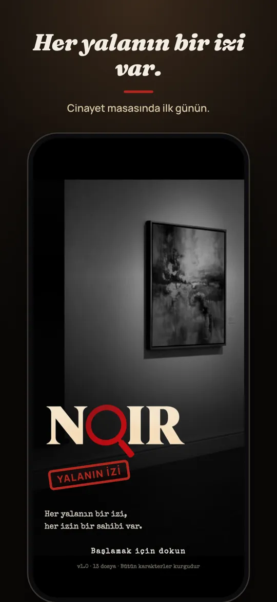
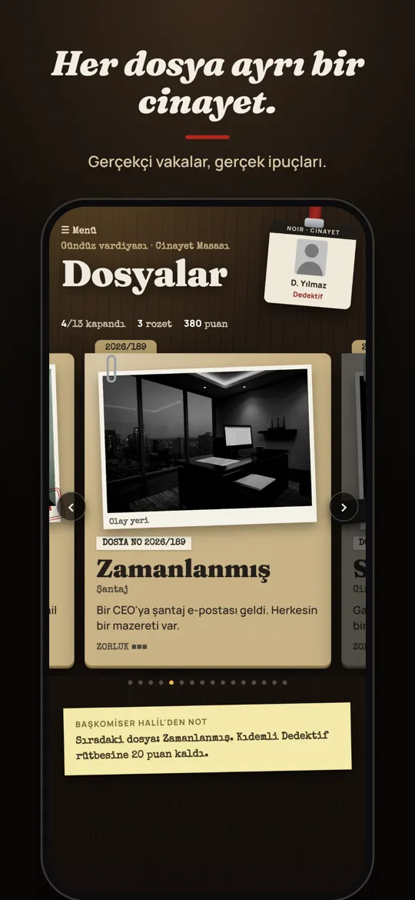
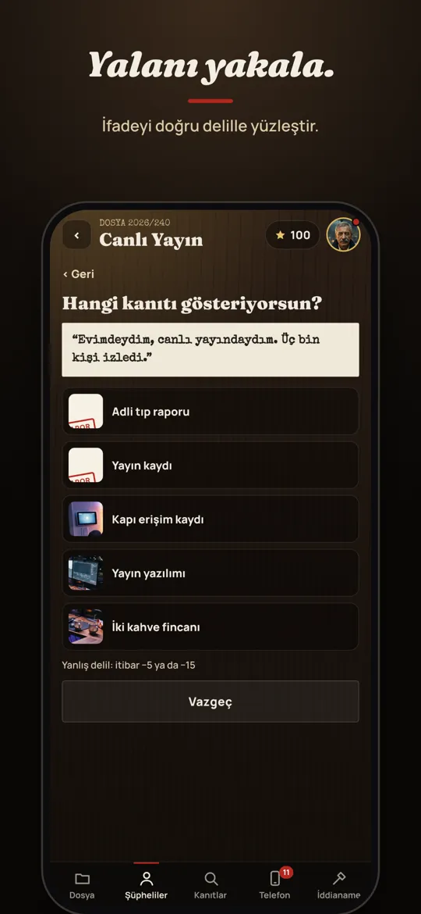
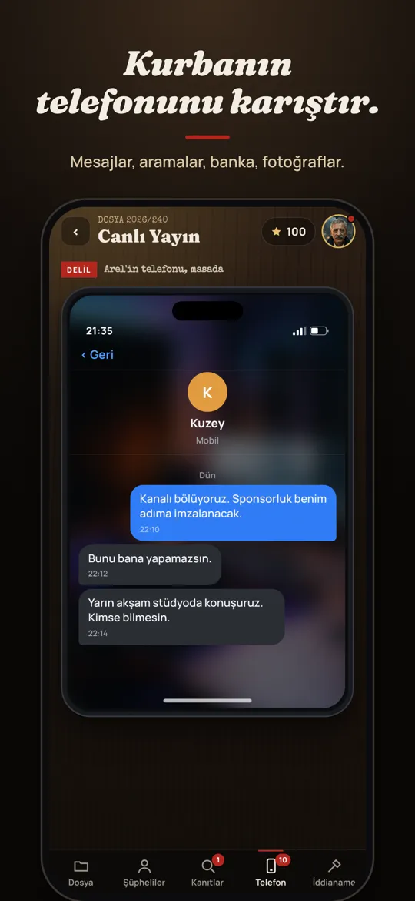
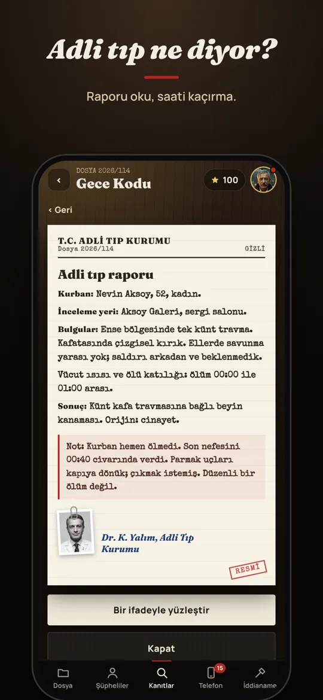

Nasıl oynanır
- Dosyayı okuHer vaka bir olay yeri, ifadeler ve işleyen bir saatle başlar.
- Şüphelileri sorgulaHerkesin bir mazereti var. Hikâyelerinin bir yerinde çatlak var.
- Telefonu inceleKurbanın son günlerinden mesajlar, aramalar, e-postalar, banka hareketleri ve fotoğraflar.
- Yalanı yakalaİfadeyi onu çürüten delille yüzleştir; sonra katili, yöntemi ve sebebi yaz.
İçinde neler var
- 13 ücretsiz dosya: galeri cinayeti, gece treni, kar fırtınası, canlı yayın, zehirli kadeh ve daha fazlası
- Her dosyada ipucu dolu gerçekçi bir telefon
- Adli tıp raporları, kamera ve kart kayıtları
- Takıldığında ortağından ipucu
- Türkçe ve İngilizce
- İnternet ve hesap gerektirmez
Sık sorulanlar
Noir nasıl bir oyun?
Noir, mobil bir dedektif ve polisiye oyunu. Dosyaları okuyor, şüphelileri sorguluyor, kurbanın telefonunu inceliyor ve kimin yalan söylediğini kanıtlıyorsun. Katil kim sorusunu kendin çözüyorsun.
Noir ücretsiz mi?
Evet, 13 dosya ücretsiz. 2006'dan dönen bir seri katili anlatan üç dosyalık Kırmızı Kurdele tek seferlik satın alma.
İnternet gerekiyor mu?
Hayır. Noir internetsiz çalışır, hesap açman gerekmez.
Android sürümü var mı?
Henüz yok, ama Android sürümü planlanıyor.
Hangi dilleri destekliyor?
Türkçe ve İngilizce.
Telefonda oynanacak iyi bir dedektif oyunu hangisi?
Delil okumayı ve çelişki yakalamayı seviyorsan, gizli nesne aramak yerine sorgu ve gerçek ipuçları üzerine kurulu oyunlara bak. Noir bunun için yapıldı: her vaka yalnızca mantıkla çözülebilir.